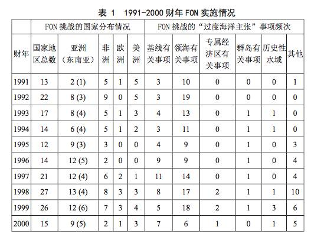
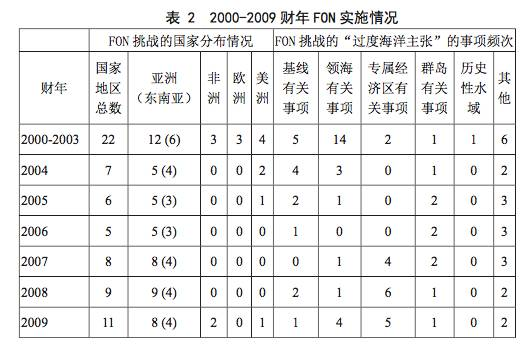
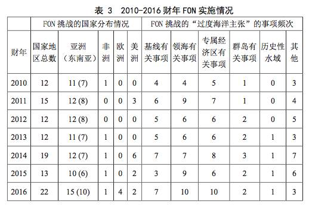
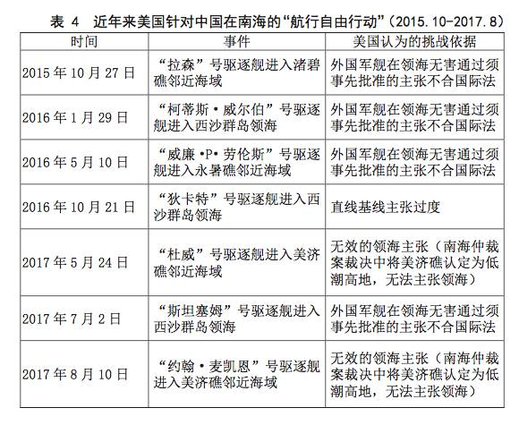

收录于合集

简
**** 包毅楠
华东政法大学中国法治战略研究中心博士后
★
摘要： 美国以其所谓“过度海洋主张”理论为支撑，30多年来持续开展“航行自由行动”，针对它所认为的其他国家提出的不符合《联合国海洋法公约》(简称《公约》)的海洋主张予以挑战。“过度海洋主张”理论缺乏《公约》基础，存在单方面解读《公约》、曲解《公约》条款、罔顾习惯国际法规则及“持续反对者”因素等瑕疵。而作为“过度海洋主张”理论具体实践的美国“航行自由行动”的实质是打着维护《公约》的旗号，行违反《公约》精神之实。“航行自由行动”将正常的“航行自由”嬗变为军舰的“横行自由”，以美国自创的“国际水域”等概念对他国进行“长臂管辖”，不仅不可能解决《公约》中存在的模糊争议，还会加剧海上争端。
关键词： “过度海洋主张”；航行自由行动；《联合国海洋法公约》
★
自1979年提出“航行自由计划”(Freedom of Navigation Program)以来，美国历届政府持续通过一系列政府文件强化其立场，提出所谓“过度海洋主张”(excessive maritime claims)理论，并在实践中采取“双管齐下”的方式，通过外交途径和定期开展“航行自由行动”(Freedom of Navigation operations)对其他国家的“过度海洋主张”进行抗议和挑战。事实证明，作为《公约》非缔约国的美国的这一套理论和实践，并不能够真正起到维护《公约》的权威性和完整性的作用。目前，国内学界对于“航行自由”涉及的国际海洋法的若干理论和实践问题已取得丰富的研究成果，对于美国开展“航行自由计划”的实践和涉及的国际法与国际政治的有关问题也有初步的分析，但对于美国“航行自由行动”的理论基础——“过度海洋主张”理论的剖析尚不深入，对于美国“航行自由行动”的实施特点及本质的分析亦不充分。“航行自由行动”是“过度海洋主张”理论的实践，二者密不可分，有必要结合国际海洋法和一般国际法的制度和规则，从理论和实践全面揭橥二者之弊病。
一、“过度海洋主张”理论的主要内容与缺陷
“过度海洋主张”理论作为指导美国“航行自由行动”的理论基础，它的提出与美国在《公约》诞生前后对《公约》持谨慎的怀疑态度、对《公约》某些扩大沿海国管辖权以及限制“航行自由”的条款持保留立场密不可分。随着《公约》获得通过并生效，部分《公约》条款逐步确立成为公认的国际法规则，美国也根据其维护本国利益的目标，相应地对“过度海洋主张”理论的具体内容进行了丰富、更新和扩充。
(一)“过度海洋主张”理论提出的背景
根据美国政府2017年2月发布的文件，所谓“过度海洋主张”指的是：“某些沿海国提出的与国际海洋法(的规则)不符的海洋区域或管辖权的主张。如果(美国)对这些主张不提出挑战，将会对国际法赋予所有国家享有的利用海洋和空域的权利和自由造成侵犯。”而美国学者、前海军上校及国务院法律顾问阿什利·罗奇(J. Ashley Roach)和国务院海洋事务办公室地理顾问罗伯特·史密斯(Robert W. Smith)合著的《过度海洋主张》将“过度海洋主张”定义为：“沿海国对海洋区域提出的不符合海洋法公约的有关主权、主权权利和管辖权的主张。”
实际上，“过度海洋主张”并不是美国政府和学者新近提出的概念，而是形成于20世纪80年代初，亦即第三次海洋法会议后期至《公约》最终获得通过的时期。美国政府历来强调航行自由的重要性，并通过海军行动对其他国家规定的各种限制“航行自由”的主张提出挑战。这种挑战的直接目的在于维护美国一贯坚持的传统意义上的“航行自由”，即包括军舰在内的任何船舶在包括公海在内的沿海国领海之外的海域享有“公海自由”。美国坚持这种传统“公海自由”的根本目的显然在于维护其核心利益。早在1979年，也即美国政府最初提出“航行自由计划”之时，时任美国总统派驻第三次联合国海洋法会议的特使艾略特·理查森(Elliot L. Richardson)大使就指出了“航行自由”，特别是美国海军在全球海洋上的行动自由，对于维护美国核心利益的重要性：“我们的经济生活水平越来越依赖海外的贸易，但也越来越易受外国的政治变局的影响。这些因素的综合影响使得我们不得不越发需要倚重美国海军的力量、行动力和其多重职能。为实现威慑和保护的使命，美国海军必须明确地展现出在全球远海保持军事存在或迅速集结军力的实力。……除非这些(航行自由和飞越自由)原则的合法性广为世界所接受并遵守，……否则我们的战略目标将无法实现。”
美国在《公约》通过的同一年，也即1982年12月发布的《国家安全决策指南》(National Security Decision Directive)中，言简意赅地指出了制定“航行自由计划”对其他国家的“过度海洋主张”提出挑战的重要意义：“现今海洋法中的不确定性以及美国不加入海洋法公约的决策使得提出有关我们的权利以及崭新的、更有效的航行和飞越计划的明确立场变得更加重要。”1983年3月8日，美国代表团针对《公约》声明(其有关专属经济区的部分尤为值得关注)：“《公约》承认沿海国在该区域资源方面的利益，并授权它主张区域内与资源相关活动的管辖权。同时，所有国家在该区域内继续享有传统的公海航行和飞越自由……军事操作、训练和活动一直被视为海洋的国际合法利用。在专属经济区内进行此类活动的权利将继续为所有国家享有。”紧接着，在同月10日发布的《总统关于海洋政策的声明》中，里根总统进一步强调：“美国无论如何也不会默许其他国家在航行、飞越及其他有关公海用途上，蓄意限制国际社会的权利和自由的单方面行为。”由此可见，在《公约》通过前后，美国政府高层已经意识到《公约》中新制定的某些规则对传统的“航行自由”原则进行了调整，在一定程度上扩大了沿海国管辖权的同时，或多或少地减少了“航行自由”的适用海域范围。例如，理查森大使认为，《公约》最终将规定的领海最大宽度扩大至12海里以及200海里专属经济区制度的出现等复杂的因素，会对美国一贯坚持的“航行自由”产生无法准确预见的影响。“过度海洋主张”理论正是在这样的背景之下应运而生，它不仅反映了美国政府对于《公约》若干新规则所持的谨慎态度，同时也是为坚持其海军海外行动不受他国干扰提供理论支撑和国内法制度保证。
(二)“过度海洋主张”的具体内容及性质
在1982年《国家安全决策指南》中，美国政府首次列举了它所认定的需要识别和挑战的其他国家提出的“过度海洋主张”主要类型：
第一，不为美国所承认的历史性海湾或历史性水域的主张。第二，未依据《公约》规定而划定的大陆领海基线的主张。第三，关于超过3海里但不超过12海里的领海主张，存在三种情况：其一，对于领海所覆盖的用于国际航行的海峡，未依据《公约》规定允许过境通行(包括不允许潜艇的水下潜行、不允许军用飞机的飞越、不允许在未获得事先通知或事先批准情况下军舰和海军辅助舰船的通行)；其二，包含对军舰或海军辅助舰船(的通行)要求事先通知或批准的差别性规定；其三，对核动力军舰或载有核武器或特定货物的军舰或海军辅助舰船适用不为国际法所承认的特殊规定。第四，领海超过12海里的主张。第五，其他的对12海里以外的海洋区域拥有管辖权的主张，例如在专属经济区或安全区对与资源性质无关的公海自由作出限制。第六，某些有关群岛与《公约》不符的主张，如不允许群岛海道通过的主张(包括不允许潜艇的水下潜行、不允许军用飞机的飞越等)。此后，随着美国对《公约》的认识及态度不断发生变化，结合考虑已经加入《公约》的其他国家的实践，美国对“过度海洋主张”的内涵也不断地加以丰富、扩充，特别是加强、突出了对于专属经济区有关问题的关注程度。考察2012年版《过度海洋主张》中有关“过度海洋主张”类型的列举，可以发现美国政府在最初列举的六类典型的“过度海洋主张”实例的基础上，主要新增了以下几项：不符合《公约》第33条规定的毗连区的主张；不符合《公约》第五部分有关规定的对专属经济区的主张；不符合《公约》第六部分的对大陆架的主张；认为《公约》条款中的“和平利用”不包括那些符合《联合国宪章》第51条的军事活动的主张；认为在专属经济区内开展的包括军事测量在内的军事活动、水文调查、海洋观测、自然资源勘探、依据《公约》第204条至206条开展的海洋环境监测和评价以及有关水下文化遗产的活动均属于海洋科学研究因而需要获得沿海国同意的主张；对铺设和维护海底电缆采取限制的主张；对用于国际航行的海峡采取强制领航的主张等。对于上述美国政府所认定其他国家“过度海洋主张”的性质，罗奇和史密斯直截了当地提出：“这些主张在国际法层面是非法的”，“威胁了其他国家使用海洋的权利”。
(三)“过度海洋主张”的理论瑕疵
“过度海洋主张”反映的是美国单方面对《公约》条款的解读，充其量仅仅代表了美国的立场，并不是对《公约》条款的唯一、正确的解读。 “过度海洋主张”理论并未对有关条款进行全面、正确的解读，其“过度”之意虽然在某些《公约》明确规定的事项上有一定的合理性，但对于《公约》中并未明确规定的事项，“过度”只不过表明了美国对待《公约》某些未定事项的一国立场，因此其解读也不可认为已成国际共识。诸如“他国军舰在沿海国的领海是否享有和商船一样的无害通过权”、“他国军舰在沿海国的专属经济区的军事测量行为是否需要获得沿海国的事先批准”、“军事活动的内涵”等问题在《公约》中并没有特别明确的规定，实际上均属于《公约》未定事项。这些事项自《公约》通过之日起国家实践就呈现出对立的情况，而国际海洋法学界对这些争议问题向来也没有绝对答案和定论。因此，美国政府和有着官方背景的学者仅凭单方面的解读就斩钉截铁地断言其他国家的国内立法和有关主张“过度”、“不符合《公约》”、“违反国际法”，有失偏颇。通过前文对“过度海洋主张”理论提出的背景及其具体内容的梳理，进而从国际法原理，特别是从《公约》的角度对该理论进行分析，不难发现该理论存在多处明显瑕疵。
第一，“过度的海洋主张”是以美国自创的“国际水域”(international waters)和“国际空域”(international airspace)概念为依据，本身缺乏《公约》规范的基础。 为了强化“过度海洋主张”的理论基础并为这一理论“正名”，美国政府和学者对《公约》条款和术语采取偷换概念的策略，自创了所谓“国际水域”和“国际空域”的概念。据2007年版《美国海上行动法指挥官手册》(下文称《手册》)中的描述：“出于海上行动的目的，世界海域可以分为两部分。第一部分包括内水、领海和群岛水域，这些水域都处于沿海国的主权管辖之下，同时给国际社会保留了特定的航行权利。第二部分包括毗连区、专属经济区和公海，这些属于国际水域，各国都享有与公海相同的自由航行和飞越的权利。……国际水域包括所有不受任何国家主权支配的水域。领海以外所有海域都是国际水域，而国际水域的上空即为国际空域。”对于美国提出的这两个概念，初看它们似乎的确是建立在《公约》划分世界海域的前提基础之上，是符合《公约》的，至少是与《公约》兼容的。但仔细推敲不难发现，实际上无论是“国际水域”还是“国际空域”，它们都缺乏国际法上的实在法依据。这两个概念并不见于《公约》任何的条款之中，也并不隐含在《公约》的任何条款之中，因此这两个概念充其量只是一种在《公约》体系之外的人为拟制。值得注意的是，《手册》中明确地指出，将世界海域划分成国家水域和国际水域是“出于海上行动的目的”，并非依照《公约》前言所述的“在妥为顾及所有国家主权的情形下，为海洋建立一种法律秩序，以便于国际交通和促进海洋的和平用途”(即《公约》对世界海域的划分)，而是主要出于军事目的，是基于对美国海军行动便利程度的考量。
第二，“过度海洋主张”在一定程度上曲解了《公约》的条款规定。 美国将某些沿海国在本国专属经济区内的对他国军事活动的限制理解为侵犯了公海自由，并认为军事活动属于《公约》第58条规定的其他国家在专属经济区内的权利范畴，[3]也即将《公约》第87条规定的公海自由类比适用于专属经济区。然而，《公约》第58条第1款明确地规定了其他国家在沿海国专属经济区内比照享有的公海权利限于“航行和飞越的自由，铺设海底电缆和管道的自由，以及与这些自由有关的海洋其他国际合法用途，诸如同船舶和飞机的操作及海底电缆和管道的使用有关的并符合本公约其他规定的那些用途”。值得注意的是，《公约》第58条第3款明确提到其他国家在专属经济区享有上述权利时，“应适当顾及沿海国的权利和义务，并应遵守沿海国按照本公约的规定和其他国际法规则所制定的与本部分不相抵触的法律和规章”。虽然《公约》的这些规定表述并没有明确排除他国海军或空军在沿海国专属经济区内和平地开展舰船操作或军机活动(如军事演习或军事测量)的权利，但“适当顾及”的义务意味着其他国家行使上述权利不得出于恶意，不得规避沿海国制定的相应的法律，也不应影响沿海国在其专属经济区内正常行使权利。如果一国刻意违反沿海国制定的关于专属经济区的相应法律法规，出于挑衅沿海国或出于非和平的目的，以使用武力或以武力相威胁等非和平的方式操作舰船或军机，或其舰船、军机的活动影响到了沿海国在专属经济区内的正常活动，则这类行为便不符合《公约》第58条的规定。从这种意义上说，《公约》并未认可美国所宣扬的那种无须顾及沿海国在其专属经济区内所享有关权利而肆意开展各种军事活动的“自由”。
第三，“过度海洋主张”理论对习惯国际法或正在形成中的习惯国际法规则未给予充分考量，甚至无视包括习惯国际法在内的一般国际法在《公约》生效后继续发挥效力的客观事实。 《公约》虽然对国际海洋法中的多数习惯法规则进行了编纂，同时也在相当程度上体现了国际习惯法的发展，但必须承认《公约》并未将国际海洋法中习惯法规则的全部内容都涵盖。这就意味着在国际海洋法体系中，在《公约》之外尚有不少得到国际社会承认的习惯国际法规则继续发挥着作用。事实上，《公约》序言就明确指出：“确认本公约未予规定的事项，应继续以一般国际法的规则和原则为准据。”不少国际海洋法学者都认可习惯国际法对于以《公约》为核心的当代国际海洋法体系的重要补充作用。因此，对于《公约》中没有明确规定的历史性水域的判定标准、历史性权利的具体内容、大陆国家的远海群岛的法律地位等重要问题，应继续由包括习惯国际法和正在形成中的习惯国际法在内的一般国际法规则调整。然而，“过度海洋主张”却将其他国家提出的历史性水域、大陆国家为其远海群岛划定直线基线等主张一概认定为违反《公约》和国际法的主张，无视这些问题并非由《公约》明文规定、应属于包括习惯国际法在内的一般国际法调整的客观事实。这样武断的认定显然与《公约》序言明确承认一般国际法效力的规定不符。
第四，“过度海洋主张”理论未曾顾及“持续反对者”在国际法上的实际意义。 如果一个国家对于某个习惯国际法规则自产生之日起就表示反对，并在该规则的形成过程中持续表示反对，则这个国家将不受该规则的拘束。就国际海洋法而言，不乏这类“持续反对者”的例子。如关于领海最大宽度不超过12海里的规则，实际上直到《公约》第2条对领海最大宽度作出明文规定，该规则才真正得以确立。值得注意的是，在《公约》通过之前就曾有20多个国家规定其领海宽度大于12海里，至今仍有7个国家坚持其领海最大宽度大于12海里。其中，如秘鲁和萨尔瓦多并不是《公约》的缔约国，它们自20世纪中期以来一直坚持主张200海里领海，美国认为其属“过度海洋主张”，并多次通过海军行动挑战两国的领海主张。实际上，虽然“领海最大宽度不超过12海里”已经成为习惯国际法规则，但鉴于秘鲁和萨尔瓦多早在《公约》通过的数十年之前就规定其领海为200海里，并在领海最大宽度不超过12海里的规则形成过程中从未改变本国立场，在《公约》通过和生效之后一直长期坚持既有主张，因此可以认为这两个国家是“领海最大宽度不超过12海里”这条规则的“持续反对者”。虽然秘鲁和萨尔瓦多继续坚持200海里的领海最大宽度不甚合理，但美国的“过度海洋主张”理论完全忽视“持续反对者”，其本身是与国际法规则相悖的。
综上所述，在特定的政治背景下由美国政府和学者自创的“过度海洋主张”理论并非完全符合《公约》规则。“过度海洋主张”理论的基础、内容以及适用充其量仅仅是反映了美国这个非《公约》缔约国的自身立场，而该理论存在的种种瑕疵更使其无法真正起到维护《公约》及当代国际海洋法体系和秩序的作用。
二、美国“航行自由行动”的实施特点
“过度海洋主张”理论同美国海军连年开展的“航行自由行动”存在密不可分的内在联系，二者之问世从源头上就并非出于真正维护以《公约》为核心的当代国际海洋法体系， 其根本目的在于服务美国海洋战略，特别是捍卫美国海军在海外的行动自由。
(一)“过度海洋主张”理论与“航行自由行动”之间的相互关系
第一，“过度海洋主张”理论为“航行自由行动”提供了美国宣扬的所谓“国际法”上的理论基础。 美国向来标榜尊重国际法，特别是将维护全球范围“航行自由”视为本国切实遵守、维护国际法的重要例证，因此，为了给“航行自由行动”冠以“合法”之名，便必须在国际法理论上寻求支撑。前文业已指出《公约》对于“外国军舰在沿海国领海的无害通过”、“外国在沿海国专属经济区的军事活动”、“大陆国家的远海群岛的法律地位”等问题皆无明确规定，学界对这些问题的争议也一直没有定论。在这样的情况下，美国单方面提出“过度海洋主张”理论，恰恰将《公约》未明确规定的事项“明确化”，实际上将其他国家提出的没有明显违反《公约》条款的海洋主张“去正当化”，从而为美国海军开展“航行自由行动”提供国际法上的理论基础。
第二，“过度海洋主张”理论为“航行自由行动”提供了明确的挑战目标。 2017年2月28日，美国国防部网站公布了2016财年美国“航行自由”的执行报告。这是自1992年起该网站连续公布的第24份报告。纵观美国“航行自由行动”历年报告，不难发现美国海军通过“航行自由行动”挑战的对象无一例外都是美国认定的其他国家所提“过度海洋主张”。以2016财年“航行自由行动”报告为例，美国海军共挑战了包括中国在内的22个国家和地区，具体针对“军舰进入领海须事先通知或批准”、“过度的直线基线”、“对毗连区内安全事项行使管制权”、“专属经济区内军事活动须获同意”、“专属经济区上空的管辖权”、“历史性海湾”等“过度海洋主张”进行了挑战。另外，美国国务院自1970年起陆续出版评述其他国家海洋主张的《海洋界限》报告，该系列报告不仅是美国官方对于其他国家的国内海洋立法和政策的综合性评述，更重要的是其选题和针对性侧重于其他国家的“过度海洋主张”，并特别着重对美国官方所认为的其他国家的“违反国际法”的国内立法和政策进行剖析，从而为“航行自由行动”提供有针对性的目标。例如，美国国务院于1996年7月9日发布的第117号《海洋界限》报告指摘中国1992年《领海与毗连区法》与1996年5月15日《中华人民共和国政府关于中华人民共和国领海基线的声明》，而美国国防部在1997年4月发布的1996财年“航行自由行动”报告便记录了1996年美国海军挑战中国国内法要求外国军舰进入领海须经事先批准的行动。由此看来，第117号报告批评中国的“过度海洋主张”为1996年美国海军挑战中国国内法的“航行自由行动”提供了直接的目标和所谓理论支撑。
第三，“航行自由行动”的实施对“过度海洋主张”理论提供了丰富的分析素材，并起着对该理论予以适时修订和完善的作用。 这种反作用具体体现在：“航行自由行动”的实施客观上对被挑战“过度海洋主张”的国家具有一定成效，在有些情况下甚至能令一些国家迫于美国的军事威慑而修改原有的海洋主张。如美国早在1986年即对菲律宾将群岛水域视为内水的声明提出抗议，此后又多年对菲律宾的相关主张进行挑战。菲方于2009年通过菲律宾共和国第9522号法令，公布了新的领海基线，并于2011年在国内立法中引入群岛海道通行制。对于菲方修改立法等行为，美国表示认可和赞赏。这种变化促使美国不断修订《美国海军指挥官手册》及发布新的《海洋界限》报告等，以完善其“过度海洋主张”理论，有时还基于不同时期国家利益重点的变换而修改认定“过度海洋主张”的标准。
(二)“航行自由行动”的实施情况及特点
根据美国国防部网站公布的1991财年至2016财年“航行自由行动”历年报告，为便于查看可汇总成以下三个表格。



从以上统计可以发现美国“航行自由行动”具有以下特点：
第一，“航行自由行动”的实施情况体现了美国政府对他国“过度海洋主张”的全面回应，即回应的全面性。 具体而言，这种全面性体现在：对于“过度海洋主张”理论涉及的具体内容，诸如基线的划定、领海最大宽度、军舰进入领海的无害通过权、历史性水域、专属经济区内军事活动等问题，均纳入“航行自由行动”挑战事项的范围，并在过去二十余年间一以贯之地付诸实际挑战行动。
第二，“航行自由行动”的实施情况体现了美国政府针对不同“过度海洋主张”的回应差异，其针对性重点突出。 虽然“航行自由行动”挑战事项涵盖全面，但由以上各表可知，其更侧重基线和领海有关问题，该类事项挑战频次占比几乎每年都在四分之三以上。这反映出美国对“过度海洋主张”最为敏感的部分是，沿海国通过“过度”基线主张“不合理地”扩大领海范围，或对外国军舰在其领海通过设定限制，由此影响外国军舰在相关海域的行动自由。换言之，美国不希望其海军行动自由的范围因沿海国“过度”主张而缩小或者受到“过度”限制，其“航行自由行动”本质是为坚守其海军行动自由的一贯立场，而其海军行动自由是为维护其全球霸权而服务。
第三，“航行自由行动”的实施情况体现了美国政府对不同时期“过度海洋主张”内涵的不同理解。 自1998财年始，美国对有关专属经济区的“过度海洋主张”愈益关注，该类主张被挑战频次日趋稳定，逐渐成为与基线和领海问题并列的三大挑战事项之一。具体而言，近十年来，美国尤为重视其海军舰船在他国专属经济区内进行军事测量等活动的自由以及其军机在他国专属经济区上空不受阻碍的活动自由。截至2016财年，美国自2007财年起已连续10年对中国主张专属经济区上空管辖权进行挑战、连续10年对印度要求他国军舰在专属经济区内开展军事活动须事先批准提出挑战。
第四，“航行自由行动”的实施具有任择性，无甚规律而言。 首先，纵观“航行自由行动”历年实施情况，美国对于某些“过度海洋主张”，如历史性水域的主张，并非像对基线、领海和专属经济区等事项那样长期持续地进行挑战，而似乎是没有特别针对性地进行了一些零星挑战。如美国对利比亚有关锡德拉湾(Gulf of Sidra)的历史性海湾主张挑战频次较多，但至2016财年方对意大利有关塔兰托湾(Gulf of Taranto)的历史性海湾主张进行首次挑战，而对印度有关曼那湾(Gulf of Manaar)主张的3次挑战则距今相当遥远。其次，“航行自由行动”对同一国家“过度海洋主张”的挑战有时亦甚随意。以印度为例，美国曾先后多次对印度不同类型的“过度海洋主张”进行挑战，有时仅针对某一项主张，有时则针对多项主张。
第五，“航行自由行动”具有强烈的地域针对性。美国的挑战重点在亚洲国家，近十年来更侧重于东南亚。 遭“航行自由行动”挑战的亚洲国家数量几乎每年都占总数一半以上，特别是2006、2007、2008和2012财年其全部挑战对象均为亚洲国家。然而，美国“航行自由行动”对欧洲国家的同类型“过度海洋主张”的挑战则凤毛麟角，在1992、1995、1996财年不曾有欧洲国家的“过度海洋主张”遭到挑战，而在2004—2015财年长达12年亦无任何针对欧洲国家的挑战行动。事实上，有相当数量的欧洲国家存在美国所认为的“过度海洋主张”。例如丹麦对法罗群岛划定直线基线、葡萄牙对亚速尔群岛划定直线基线、英国对马尔维纳斯群岛(英国称福克兰群岛)以及特克斯和凯科斯群岛划定直线基线、西班牙对过境飞越直布罗陀海峡的外国飞机提出管辖权并对在直布罗陀海峡过境通行的外国船舶提出污染控制管辖权等，在美国看来都属于“过度海洋主张”，但美国仅通过外交途径提出抗议。这种明显的“双重标准”做法印证了美国“航行自由行动”的地域针对性。
第六，“航行自由行动”还具有强烈的国别针对性。 美国“航行自由行动”对于某些国家的“过度海洋主张”仅进行过一次挑战，对于某些国家持续多次挑战，而对于某些国家则刻意不予挑战。如1998财年针对肯尼亚的直线基线和历史性海湾的主张、2009财年针对多哥的领海最大宽度的主张皆仅存一次挑战，而对于中国则自2007财年至今几乎每年都进行高频次挑战(近三年在南海的行动见表4)。

美国“航行自由行动”的实施特点揭示出，该行动虽表面上看似客观公正，似乎美国意在通过对某些违反《公约》的海洋主张进行挑战，来维护以《公约》为核心的当代国际海洋法体系，但数据统计的细节恰恰证实了美国实际上是在通过其强大的海军力量压制发展中国家，特别是亚洲国家提出的并不明显违反《公约》的海洋主张。显然，美国“航行自由行动”纯以维护《公约》和国际海洋法体系为借口，企图凭此垄断《公约》和国际海洋法解释权，以维护美国海洋霸权及其主导的国际海洋秩序。
三、对美国“航行自由行动”实质的批判
同“过度海洋主张”理论类似，从本质上看，美国“航行自由行动”同样存在明显瑕疵，具体表现在以下四方面。
第一，“航行自由行动”的实质是打着维护《公约》的旗号，行违反《公约》精神之实。 “航行自由行动”是以“过度海洋主张”理论为国际法理论基础的，而如前文所述，该理论本身存在瑕疵，包括曲解《公约》条款、忽视习惯国际法规则、强行解读《公约》未定事项并将其他国家的相关主张视为违反《公约》和国际法。理论基础的瑕疵决定了“航行自由行动”不可能真正起到维护《公约》的积极作用。实际上，美国政府和学者自创的所谓“国际水域”概念，本身就是在《公约》体系之外另起炉灶，而美国却以此为据派遣海军实施“航行自由行动”，在其他国家的专属经济区内进行军事演习和军事测量等活动。凡此种种，均与《公约》序言明确提及的“互相谅解和合作的精神”、“妥为顾及国家主权”、“实现公正公平的国际经济秩序”、“照顾到发展中国家的特殊利益和需要”等精神相悖。
第二，“航行自由行动”是美国政府歪曲解读和行使“航行自由”，其本质是“横行自由”。 航行自由作为国际海洋法的基本原则和核心制度之一，其本质在于维护所有国家和平利用海洋、促进贸易和经济合作发展。虽然航行自由原则本身同样适用于军舰，但从美国“航行自由行动”的实施来看，这种行动与正常的货物航运和促进商贸并不存在必然联系，这种行动是彻头彻尾的军事性活动，在本质上不是国际航运所必须的，行动的性质也与经济性质毫无关联，在许多情况下甚至威胁到沿海国的安全。印度尼西亚海洋与渔业部高级顾问哈希姆·贾拉尔(Hasjim Djalal)曾指出：传统意义上的(绝对的)航行自由概念已经过时了。各国有理由以保护本国安全为由对传统意义的航行自由作出限制。而美国开展“航行自由行动”的目的在于与其外交抗议相呼应，对美国所认定之他国“过度海洋主张”进行挑战。这便决定了美国在开展“航行自由行动”时，几乎无一例外地动用军舰和军机，不以正常行使航行自由的快速通过为目的，而是故意、不正常地进入沿海国的领海或专属经济区，实际上有非常明显的挑衅沿海国、威胁沿海国安全的意味。2017年5月25日，美国军舰“杜威”号进入美济礁邻近海域停留长达一个半小时，并曾进行救生训练演习。[1]这种不以通行为目的、在沿海国管辖海域内以军舰从事军事训练演习的行为，是美国海军“横行自由”的典型例子。
第三，“航行自由行动”本质上属于“长臂管辖”。美国本身并非《公约》缔约国，其固然也有权对于《公约》的条款规定提出本国的立场和见解，但对于其他国家依《公约》制定的国内法横加指责，强行给《公约》缔约国扣上违反《公约》的帽子，显然属于不正常的“长臂管辖”。 这种“长臂管辖”的危害性在于，美国以自创的标准(如“国际水域”)取代《公约》明确规定的术语，以其本国对“航行自由”问题的解读解释《公约》未明确规定的事项，将本国单方面的解读上升为国际法，从而对其他国家的国内立法横加指责。严重地说，这种“长臂管辖”是以美国官方的国际法观点取代《公约》、窃夺《公约》解释权和国际海洋法的话语权，将严重危害《公约》的权威性。
第四，“航行自由行动”在一定程度上加剧了各国间有关《公约》解释和适用的争端，违反和平解决争端的国际法原则。 自《公约》诞生之日起，有关《公约》中涉及航行自由问题的未定事项和争议从未消除。美国却对这些未定事项和争议一贯采取无视态度，如美国多次通过“航行自由行动”对伊朗和阿曼对霍尔木兹海峡(Straits of Hormuz)承认的过境通行权限于《公约》缔约国的立场进行挑战。虽然的确有些国家近年来修改了关于外国军舰进入本国领海须获批的国内法规定，取消了某些限制，但整体上看，在该问题上坚持原有立场的国家仍有近40个。“航行自由行动”导致在某些沿海国的近海区域的海空意外事件频频发生，特别是中美两大国多次因南海突发事件而爆发外交冲突，这或多或少是由美国单方面执意开展“航行自由行动”加剧的。从《公约》和一般国际法的角度看，对于中美在“航行自由”问题上的不同解读造成的争端，理应依据《公约》第279条的规定，按照《联合国宪章》第2条第3项的规定和《联合国宪章》第33条列举的和平方法谋求解决之道。然而，美国事实上根本不考虑这些和平方法，无视《公约》义务、《联合国宪章》以及习惯国际法规则，肆意采取军事舰机强行挑战的各种危险模式。美国这些危险行动显然不利于解决争端，而只会加剧争端。
四、结语
通过梳理美国“过度海洋主张”理论以及对其“航行自由行动”的实施分析，可以看出：
第一， “过度海洋主张”理论系美国政府和有官方背景的学者根据美国的核心利益提出的，该理论反映出美国政府一贯重视“航行自由”，特别是美国海军在全球海域的行动自由不受沿海国限制的立场，体现了美国政府和学者在《公约》通过前后对《公约》给予沿海国对更多海域拥有管辖权这一背景之下的疑虑。由于这一仅反映单方面立场的理论存在多方面瑕疵，其对《公约》及国际海洋法秩序的良性发展并无益处。
第二， 以“过度海洋主张”理论为基础开展的“航行自由行动”，体现了美国单方面对它所认定的其他国家提出的“过度海洋主张”的强势回应。从“航行自由行动”的实施特点来看，该行动表面上看似客观公正，但实际上无法掩盖该行动的任择性、强烈的地域针对性和国别针对性。
第三， “航行自由行动”的实质是打着维护《公约》的旗号，行违反《公约》精神之实，美国意图借此将正常的航行自由嬗变为“横行自由”，以自创的“国际水域”等概念进行“长臂管辖”。美国开展“航行自由行动”不仅无法解决有关《公约》的争议，而且还会影响区域安全，加剧海洋争端。
总而言之，美国政府和学者提出的“过度海洋主张”理论和以该理论为基础开展的“航行自由行动”只可能代表和维护美国一国之利益，不但不可能解决《公约》中有关航行自由问题未定事项的争议，无法起到维护《公约》和国际海洋法秩序的作用，反而会严重影响《公约》的权威性。可以预见，在国际法学界对于外国军舰在领海的无害通过、专属经济区内军事活动等焦点问题作出定论之前，美国单方面开展的“航行自由行动”对涉及《公约》未定事项的他国国内立法和相关主张进行挑战，绝不会得到国际社会的普遍支持。“过度海洋主张”理论及“航行自由行动”的实践也必将继续受到国际社会和国际法学界的批判。 （注释略，详见原文。）
文章来源： 《国际问题研究》2017年第5期
筛选： 沉安 编辑： 沉安
声 明
国政学人微信公众平台系非盈利学术平台。建立初衷是方便广大学人进行学术研究，促进学术的传播和交流，不做任何商业用途。如有任何权利问题，请直接与我们联系。